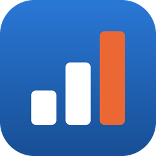

資産ダッシュボード(Windows)
資産ダッシュボード(以下「本アプリ」)は、利用者のパソコンの中だけで動作するアプリです。
本アプリが扱うのは、利用者が自分で読み込んだ CSV ファイルの内容(各金融機関の残高・取引の記録)と、利用者が自分で入力した内容(名義・銀行名・残高・債券の情報・メモなど)です。
これらの情報は、利用者のパソコンの中(本アプリ専用のデータ領域)にだけ保存します。利用者が「データの書き出し」「バックアップを保存」を行った場合は、利用者が選んだ場所にファイルを保存します。
本アプリは、取り扱う情報をインターネットなど外部へ送信しません。開発者が利用者の情報を受け取ることもありません。証券会社・銀行などの ID・パスワードを入力・保存することはなく、金融機関のサイトに接続することもありません。
本アプリは、利用状況の収集(アクセス解析)・広告の表示・トラッキングを行いません。
本アプリをアンインストールすると、本アプリのデータ領域に保存した情報は削除されます。利用者が書き出し・バックアップで保存したファイルは、利用者が管理してください。
appyokohama@broad-saito-5368.fool.jp
本ポリシーを改定する場合は、このページでお知らせします。
制定日:2026年11月14日